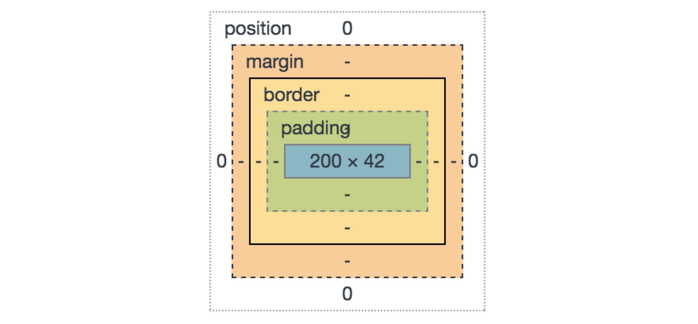
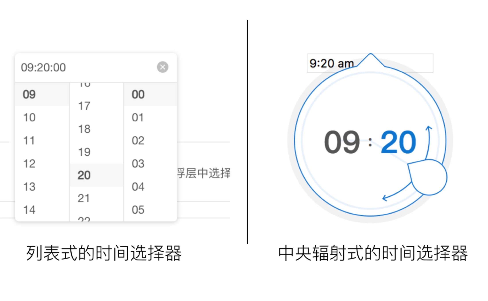
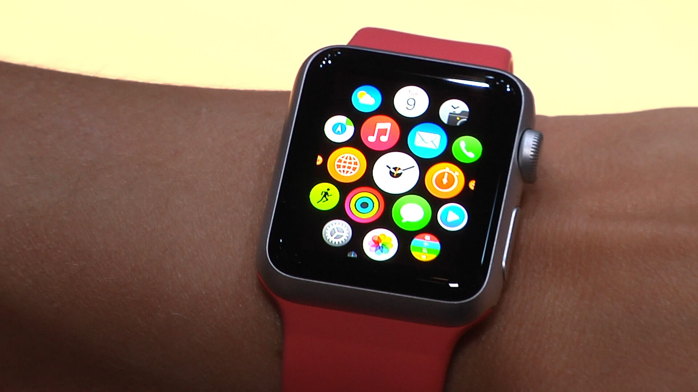

菲茨定律简介
菲茨定律(Fitts’ Law)的应用非常广泛，尤其是在人机交互领域更是入门必学知识点之一。在谈论人机交互的语境下，菲茨定律一般用来研究的是“cursor”从交互界面上的一个位置移动到界面上另一个元素上的便捷程度。
其数学模型如下：
- MT是cursor移动所需时间
- a和b是经验参数，会由于不同的设备而出现差异(所以这就是为什么电竞选手总是自带键鼠去比赛)
- D是从cursor的起始点到目标元素中心点的距离
- W是沿着运动轴的方向来测量的元素宽度
我在这里并没有用“光标”这个词语，而用了“cursor”. 是为了强调cursor不仅仅是鼠标、触摸板等设备的光标，还包括触屏设备环境下与屏幕进行交互的手指。
菲茨定律是建立在大量的实验论证基础上的，对此有兴趣的朋友可以在http://fww.few.vu.nl/hci/interactive/fitts/这个站点上去亲自测试一下。（我曾经对菲茨定律也不服，直到被实验数据赤裸裸地虐了一遍）
菲茨定律的简化模型
所谓“简化模型”是我把菲茨定律从定量到定性进行了一次转变。为什么要对菲茨定律的模型进行简化呢？通过公式我们可以看出，这是一个量化模型，这就意味着我们按公式去使用它的时候，要在不同的设备上根据实验或经验来给出参数a和b的值。这么做的成本很高，而且，绝大部分情景下，我们其实也不需要严格计算出每一个点击究竟需要多少毫秒。
作为一个交互设计师，在实际工作中，只需要把菲茨定律简化为如下一句话：
用户操作的便捷程度，与目标元素的尺寸成正相关，与目标元素的距离成负相关。
按照这么一句话，再略加以推导，其实就已经能给我们带来许多设计技巧了。
应用一，置操作元素于边、角
我们看下面这两个例子，直观感觉一下不同的操作系统上，在全屏模式时用户把光标从屏幕中心移到“文件”两个字上的便捷程度。
由于macOS(旧称为OS X)对于相当一部分用户群体来说有些陌生，另外本操作所需要的时间对于绝大多数用户都是毫秒级的，所以许多用户难以直接感知哪种更便利。但是实验数据表明在右边的布局中用户点击到“文件”两个字可以比左边节省超过一半的时间！(数据来源：软件交互设计，清华大学史元春)
其原因在于，光标在移动到屏幕边缘时是无法再继续移动的，这就相当于在屏幕边缘方向上元素的尺寸是被放大了。元素在上边边缘时，用户在把光标向上移动的过程中不用再小心翼翼地防止光标“越过”元素。
所以，我们通过这个例子已经发现，把操作元素置于屏幕的边角是更加便于用户操作的。这就是为什么Windows的任务栏以及macOS的dock栏要默认放在屏幕下边缘，windows的“开始”按钮要默认放在左下角，这样的例子在成功的软件中比比皆是。这就是菲茨定律的第一个应用——把操作元素置于屏幕的边、角部位。
另外现在我们也可以看到在微软的office2007及更新版本中，已经尽可能地在针对上面这个例子的问题做优化，其做法是把“文件”做到左边边缘。而虽然苹果在上面的例子中表现不错，但也不见得Apple的设计总是技高一筹，比如下面这两个浏览器，明显左边的设计更方便用户切换页签：
针对移动设备而言，虽然在触屏设备上，屏幕边框并不能阻止用户手指划出屏幕之外，但显然把常用操作按钮放在屏幕边缘部分能使得用户降低“按到其他元素”的后顾之忧，所以其效率提升也是比较明显的。
应用二，48px原则
根据菲茨定律，元素当然越大越好，但根据布局的需要，我们又不能把元素的尺寸做的特别大，那么就要做一个平衡——做到什么尺寸是合适的呢？
大量的经验数据表明，48px是一个最合理的尺寸，不至于大到让人觉得丑，又不至于小到让人不易点击。在Bootstrap和Ant Design等流行框架中，我们经常也能看到48px这样一个值，这个值也被众多框架用来作为业务图标高度的默认值。
一般认为，小于48px就不再适合作为常用图标的尺寸了，在某些解决方案中，考虑到界面布局的需要，可能会做到32px，但需要注意这种尺寸尽量用在一些不太常用的操作上。
至于为什么是48px，而不是49或47，这是由于业内人士一般对UI尺寸的调整是以4px为粒度的，就像程序员第一个程序总写“hello world”一样，无需深究。
应用三，用padding值来置换margin值
在CSS盒模型中，padding和margin都可以用来定义边距，许多人在入门前端开发时候都会被这两个概念困扰一下。这两个值可以这样理解：一个元素被包在一个盒子中，margin是用来定义两个盒子之间的距离，padding用来规范盒子的边与盒子内部元素之间的距离。

缺乏经验的前端工程师在处理边距的时候缺乏方法论做指导，就可能会出现“margin”流派和“padding”流派，即一味地选择其中一种作为定义边距的工具。
其实他们是有许多不同的。
对于交互设计来说，我们需要关注的不同点是：盒子内的点击都是可以被元素的事件监听器所捕捉到的，而盒子外的点击则无法被元素的时间监听器所捕捉。换句话说，用户在padding区域的点击是会被捕捉到的，而在margin内的点击则不能被捕捉到！
所以，根据菲茨定律，当我们需要在可点击元素之间定义边距的时候，如果既可以用padding又可以用margin，出于便于用户点击的角度出发，我们更推荐选择用padding，这样可以在达到同样视觉效果的前提下增大用户的操作面积。
但是要注意，margin也有其重要的作用，适当增加margin值可以避免用户的误触，做到元素之间的分明，所以要进行权衡之后再做决定。
应用四，中央辐射式的布局比线性布局更易操作
首先我们看两个时间选择器的设计方案

是不是明显右边的设计能够让用户更方便地选择目标时间？
其原因就是中心辐射的布局能够减少cursor距离目标位置的距离，除此之外这个案例中右侧的方案也利用了人们对时钟布局的既有经验、增大了点击区域(雨点形状的手柄)等技巧。
左边的设计除了cursor与目标元素距离方面的劣势，还变态地增加了“滑动”的操作。这个时间选择器是Ant Design目前的设计方案，我个人认为它是Ant Design最大的一个槽点
所以，如果条件允许使用中央辐射式布局，在人机交互的设计中，就尽量不要用列表来做，中央辐射式布局更符合菲茨定律的优化方向。
Apple公司许多经典产品的设计都用到了中央辐射布局，比如iPod nano与Apple TV遥控器的键盘，Apple Watch上的app布局等。

设想一下，你现在回到童年，还是走进那家游戏机房，颤颤巍巍地往拳皇的机器里投了两个币，却看到所有的操作都变成了一排列表的样子吧。
应用五，给操作分类
把相同类型的操作放在相邻的位置是一个相对普遍的做法，一般认为这么做更能便于用户记忆操作按钮的位置，但其实它同时也是满足菲茨定律的，因为用户对界面的操作往往也是聚类的——选择字体之后的操作更可能是选择字号或选择字体颜色，而非设置页边距。
因为用户操作具有聚类的性质，所以把同类操作放在临近的位置，实际上是降低了用户触达操作按钮的时候的距离。
总结
就好像我们中学时候学习牛顿三定律一样，看似很简答的几句话，老师却能变着法地弄出很多题目来考我们，关键是我们还很难考到满分。菲茨定律也一样，虽然道理看上去很简单，但是在应用上却能帮助我们做出很多设计方案。本文目前只列出5项，但其应用还可以很丰富，需要我们用心观察，慢慢积累。
本文由李勃的周末原创，转载请注明出处。